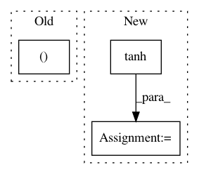

5c3f7d5f5cd23ceb70d77ccdde7ee928d59439a9,thinc/backends/jax_ops.py,,forward_lstm_gates,#,725
Before Change
// Ct1: Previous cells (i.e. C_{t-1}
// Xt: Current inputs.
// hf, hi, ho, hc: Forget, input, output, cell gates.
At_hf, At_hi, At_ho, At_hc = xp.split(At, 4, axis=-1)
// Number the steps here, to refer back for backward pass.
// 1. Activations
hf = sigmoid(At_hf) // 1a
After Change
Ct3 = hf * Ct2 // 2a
Ct3 += hi * hc // 2b
tanhCt3 = tanh(Ct3) // 3a
Yt3 = tanhCt3 * ho // 3b
// We don"t need the gradient for this, it"s just for backprop calculation.
Gt3 = xp.concatenate((hf, hi, ho, hc), axis=-1)
In pattern: SUPERPATTERN
Frequency: 3
Non-data size: 3
Instances
Project Name: explosion/thinc
Commit Name: 5c3f7d5f5cd23ceb70d77ccdde7ee928d59439a9
Time: 2020-01-19
Author: honnibal+gh@gmail.com
File Name: thinc/backends/jax_ops.py
Class Name:
Method Name: forward_lstm_gates
Project Name: maciejkula/spotlight
Commit Name: 396303a7b84fe4f8b304a5878c487ff0b3a16097
Time: 2017-07-08
Author: maciej.kula@gmail.com
File Name: spotlight/sequence/representations.py
Class Name: CNNNet
Method Name: user_representation
Project Name: SheffieldML/GPy
Commit Name: 624117eaac16a0674201471119d940ccd81b1771
Time: 2015-03-26
Author: james.hensman@gmail.com
File Name: GPy/mappings/mlp.py
Class Name: MLP
Method Name: f